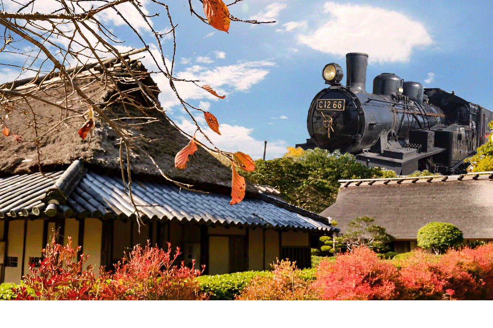
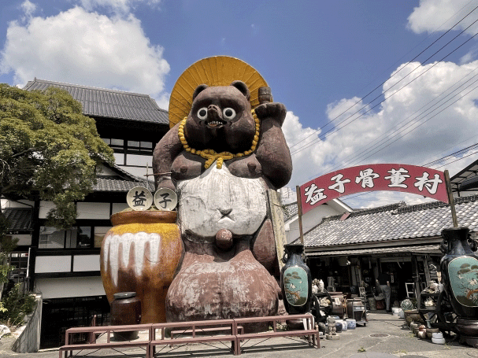
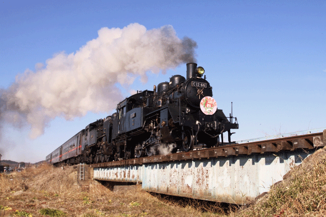

- 
- 
-

- 
風情に満ちた旅
- 古民家とSLのひととき
自然と楽しむ古民家
益子町は、国指定文化財をはじめとした多くの文化財が残っており、益子焼が有名な町に在る古民家です。 木々によって生まれる空気を味わいながら、各々の過ごし方で日々の疲れを癒していただきながら安らぐひとときをお楽しみいただき、どこか懐かしい日本の古き良き「日常」を感じてください。
当宿泊施設では、宿泊客が地域文化や歴史を深く理解し、自然に囲まれた環境で心身ともにリフレッシュできる特別な体験を提供いたします。 伝統工芸や地元の文化について学ぶイベントを定期的に開催しています。例えば、陶芸や染色、農業体験など、実際に手を動かして体験できるプログラムが豊富です。 他にも地元の食材を使ったお食事や天然温泉でのリラックスタイムをお楽しみいただけます。
【鉄道をご利用の場合】
東北新幹線/本線（ＪＲ宇都宮線）のご利用→小山駅で水戸線に乗換え下館駅まで約26分。下館で真岡鐵道に乗換え約45分で益子駅着。
【お車をご利用の場合】
東北自動車道栃木都賀ＪＣＴ→北関東自動車道真岡ＩＣ→国道294号線、または121号線で益子まで。
ＩＣより約25分。常磐自動車道友部ＪＣＴ→北関東自動車道桜川筑西ＩＣ→県道41号線で益子まで。ＩＣより約20分。

予約する